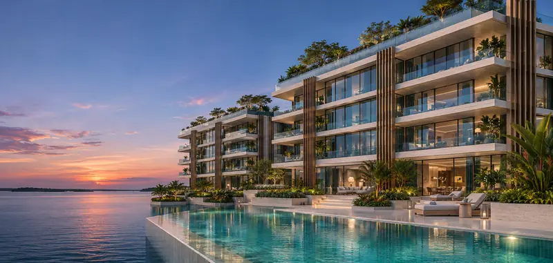

ARVESSA ↗01 / BLUE HOURMột nhịp sống khác.Một tầm nhìn riêng.Khám phá bộ sưu tập ↗ĐƯỢC CHỌNLuminous WaterfrontÁnh sáng xanh làm nổi bật đá sáng và kính. Navigation kính nhẹ; khoảng trắng rộng để chuyển nhịp.
ARVESSA ↗02 / PEARL ATELIERKiến trúc.Và khoảng thở.Một góc nhìn khác ↗SÁNG · EDITORIALThe Quiet AtelierÁnh sáng tự nhiên, cây xanh và vật liệu. Tinh thần rõ ràng, phù hợp các màn hình nghiệp vụ.
ARVESSA ↗03 / SUNSET RESIDENCENơi ngày dàichậm lại.Chạm vào đường chân trời ↗ẤM · NGHỈ DƯỠNGSunset ResidenceChiều ấm, tương phản trầm và nhịp nghỉ. Có cảm xúc, nhưng dễ nghiêng về resort hơn nền tảng số.